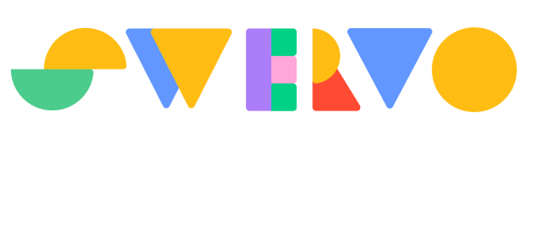
99P - Honda
Victor Gradski
Sarah Hand
Lauren Hung
Jenny Ong
Spring + Summer 2021
Connectivity, mobile devices and an autonomous future are disrupting the way we spend time in cars, making new experiences possible. Honda asked our MHCI Capstone team to investigate a future where the intelligence and data gained from this ecosystem could be used to inform new social interactions.
SWERVO reimagines the car as a game console, using data to create dynamic games with unique combinations of play, interaction modalities, and the affordances unique to the car. The play that ensues fosters connection and maximizes time in the car.
I was a product design and client lead, driving strategic direction, conceiving research initiatives, and designing in-car experiences, while managing client expectations and shaping results into stories for presentation.
SWERVO is a system that reimagines the car as a game console. It uses personal, contextual, and telematics data to create dynamic gameplay, unique to the driving experience, turning drive time into moments of connection for families.
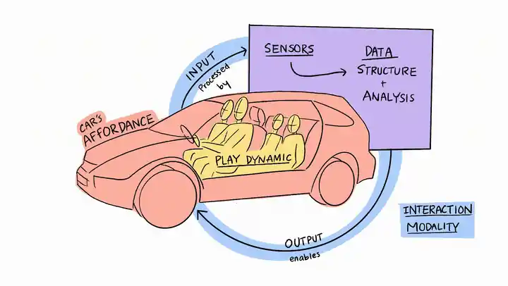
In early explorations, we discovered that connection in cars could be created by combining elements from our design framework consisting of the car's affordances, a play dynamic and interaction modality. We validated this framework and the concept for SWERVO, after testing three experiential prototypes:
Moe combines a visual and conversational interface with data from the exterior environment to facilitate a question + answer game, promoting self disclosure.
Simón leverages the spatial arrangement of car seats and the confined space, through a haptic (buttons) interface and cooperative play.
Marty combines haptic and kinetic input, the movement of the car, and cooperative play into a game where seats are the controllers.
From the outset, we recognized our project had a broad problem space. To gain a foundation, I conducted research with my team to understand automotive trends, what people enjoyed about their in-car experience, their pain points and what they wished they could do in cars.
Through academic literature review and expert interviews, we uncovered four trends spanning culture, automotive, and technology domains, that would guide our early thinking.
During combined directed story-telling / contextual inquiry sessions and a virtual scavenger hunt study, we inquired about memorable transit moments and artifacts that were important to users in their cars or during their time in transit. By having users tell stories we received richer emotional data and could use that to inform our contextual inquiry.
Our research revealed an underlying tension. While people would express frustration toward the driving experience, they would show us unique artifacts and tell us stories about positive experiences in the car. People were carving out a unique time and space to be in the car, yet they were't consciously appreciating it.
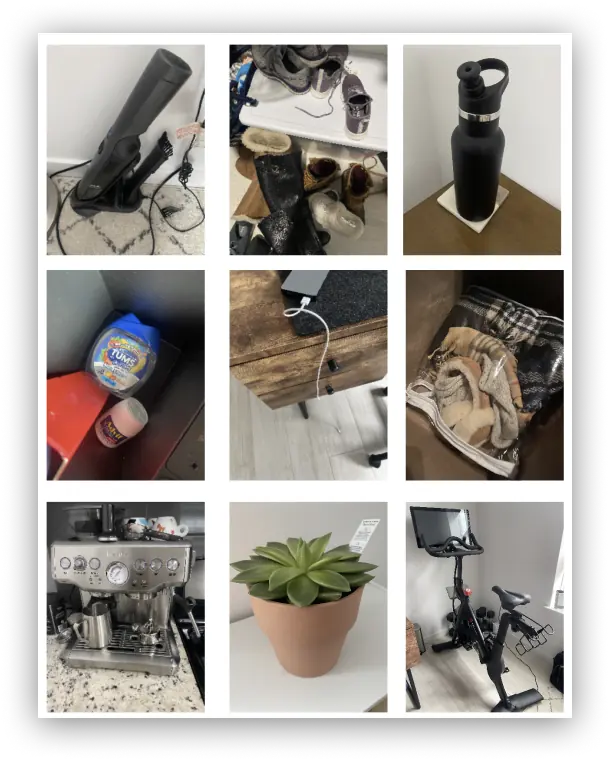
Because our project was future-facing, we wanted to push users to think about the future to see how they reacted. Participants were presented storyboards with a pain point and two future solutions. To encourage a generative session, participants chose between the solutions. Three findings impacted the project:
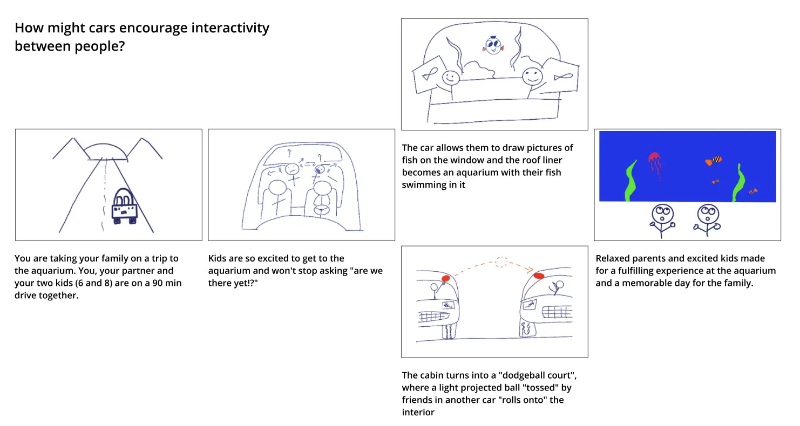
Research generated a vast amount of data. We created an affinity diagram from each study then looked at findings holistically to narrow to themes. I organized the data and pushed the team to challenge our thinking and reframe ideas. This resulted in 4 insights that became the foundation of our project.
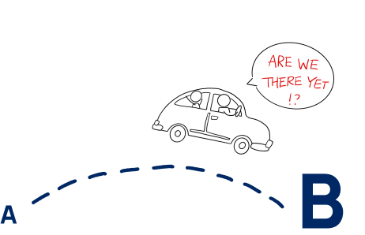
People view the car as a utility to transport them from point A to point B, placing value on the destination over the journey, overlooking the possible value of time spent in transit.
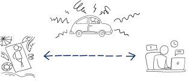
People described time in the car as forcing them into a space between leisure and productivity. They want to use the time better, but the constraints of the car make it feel like neither is possible.
The constraints of the car demand a level of disconnection from the outside world. We saw the car used as a portable private space where people were free to be 'themselves', and where the car encouraged mindful reflection and presence.
We repeatedly heard stories about meaningful moments happening in cars. A first kiss, breakups, coming out to a parent, addressing a death in the family, life announcements, and other intimate moments. The car affords a level of limited distraction, perceived separation, familiarity and a relaxed informality that make it conducive to deep conversations and connection.
With insights to guide us, our next step was to define a design opportunity and target. As a team, we used our insights to reframe pain points as opportunities for design.
Part of our project was identifying a user group on which to focus. Because so many conversations, memories and stories from our research centered around family moments in the car, families made the most sense as our target. Adding to this, our trends signaled that families are spending more time in the car and tensions surrounding children and technology usage are growing. Finally, families, as a target, aligned with Honda's strategic vision. We had our target.
Our insights revealed a gap between how people perceived time in the car, compared to how they were actually using it.
People were spending valuable time in the car which presented an opportunity to reframe focus from what they can’t do, to what they can do. At the same time, our insights also told us that the car offered a unique space for presence and connection. This gap presented a rich space for design and added up to our opportunity space:
We captured our work in a concept video, which was presented to Honda during our research presentation. I conceptualized, wrote, and storyboarded the video and worked with my teammate Lauren and a colleague to bring it to life. Our Clients said that this was one of the most powerful expressions of a customer centric problem they had seen.
We had gone from blue sky to insight and from insight to design opportunity. With a timeframe of three months remaining, we needed to move from opportunity to action, so we could test with users as soon as possible.
Our first step was to determine what connection meant for our project. In early stage ideation, game ideas were prevalent and warranted further exploration. Through research we found that play helped create a shared presence where people would be actively enjoying time with each other. We decided that shared presence was what we were hoping to achieve and that play was the vehicle we would use to get there.
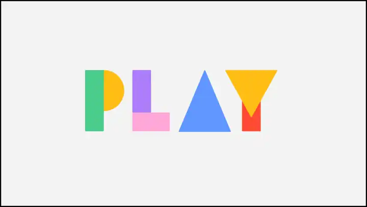
As we generated and evaluated ideas, a pattern emerged. Often, ideas would consist of a play dynamic, interaction modality and an affordance specific to the car. As we continued to encounter this, we created a model framework to systematically generate and evaluate experiences. The model would also help us convey our thinking and process to Clients and Stakeholders.
With the framework in place, we shifted our mindset to 'building to learn'. With a number of unknowns, rapid prototyping helped us move past them and eventually became our team's greatest strength, building + testing 7 prototypes with 14 different families in a 2 month period.
Using our framework, we mixed and matched elements from each category and rapidly prototyped ideas to answer the question: does this combination of affordance, play dynamic and interaction mode create connection between family members in the car?
To do this we created a prototyping process to test and learn as quickly as possible.
With an idea in mind, the team would enact the scenario as users, quickly and cheaply. This allowed us to build empathy with our users, find early challenges or successes and decide if it was in our best interests to iterate or move on.
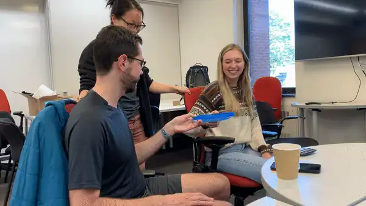
If validated through enactment, we increased fidelity just enough to bring the idea to life in analog or using Wizard of Oz tactics. This informed iterations, using our framework, and optimization toward higher fidelity prototypes.
The pandemic complicated testing and made recruitment difficult. To overcome this, we built a car simulator using foam core, chairs, a TV, speakers and iPads, that we could safely test outdoors, using 'guerrilla' tactics.
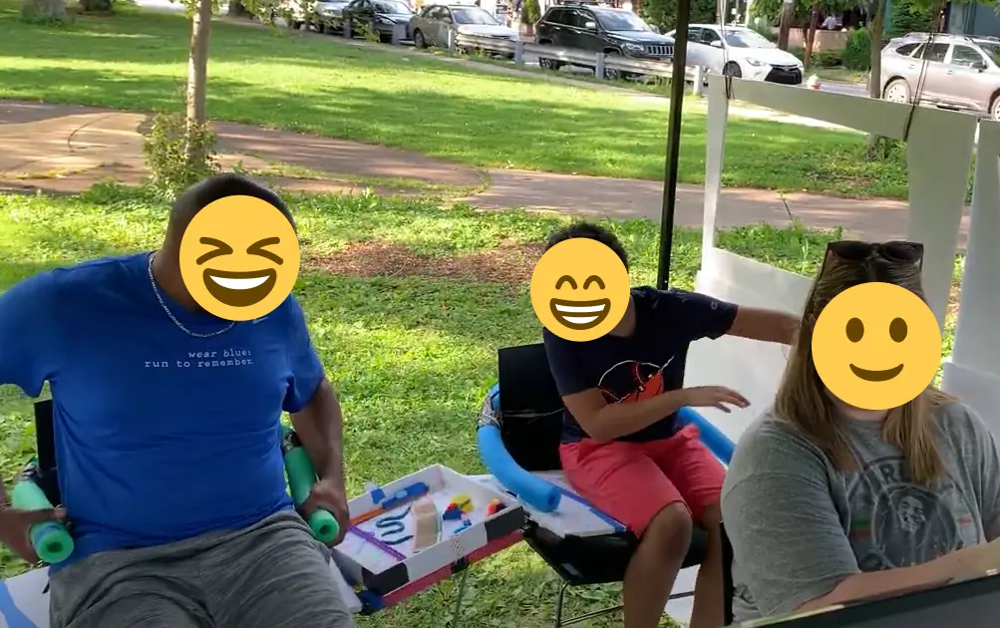
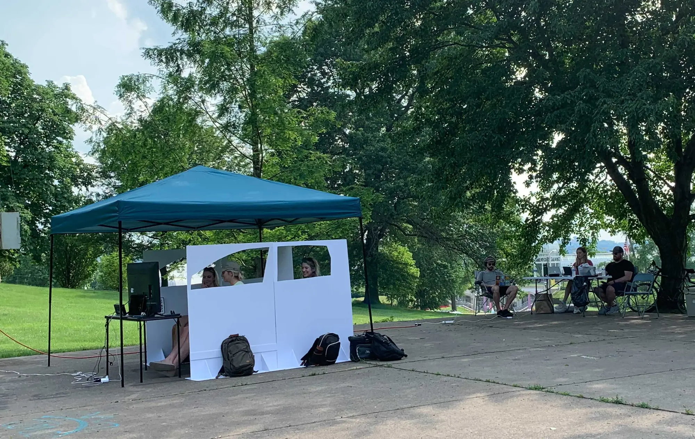
Our final step was testing refined prototypes, with technology we built, in cars with families. For these tests, my role was designing the experience so it felt seamless to the user. We were using a mixture of 'Wizard of Oz' tactics along with technology we built. I designed the experiences and acted as 'the wizard' behind the scenes, bringing them to life for our users.
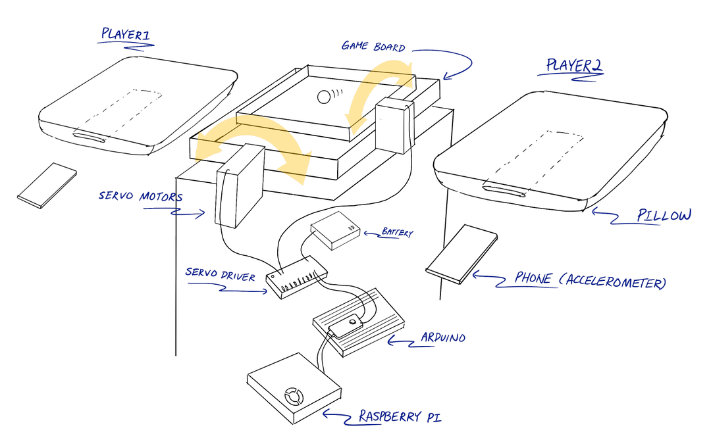
Our iterative process culminated with three experience prototypes, each consisting of a combination of our design framework. In our final round of testing we validated the framework as a tool Honda could use to build similar experiences.
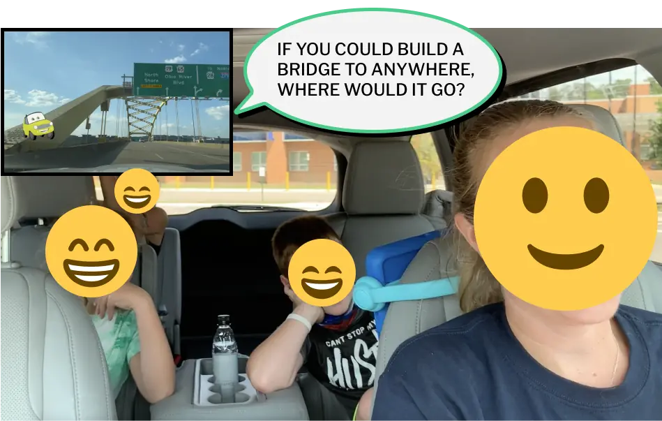
Moe combines a visual and conversational interface with the changing exterior environment to facilitate a question/trivia game aimed at promoting self disclosure between parents and kids.
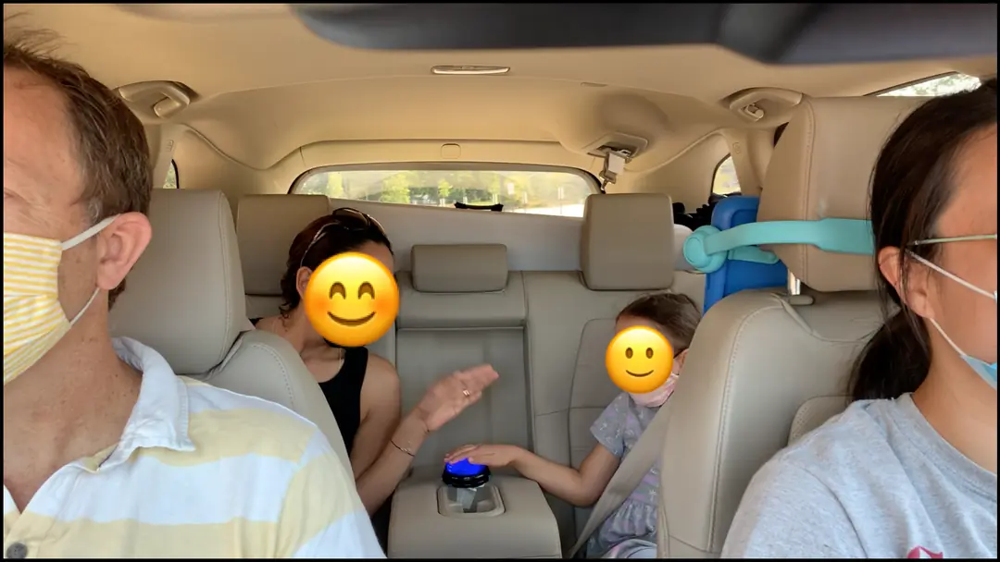
Simón leverages the spatial arrangement of car seats and the confined space, through a haptic (buttons) interface and cooperative play. Players must repeat a sequence by pressing buttons, similar to the game 'Simon'.
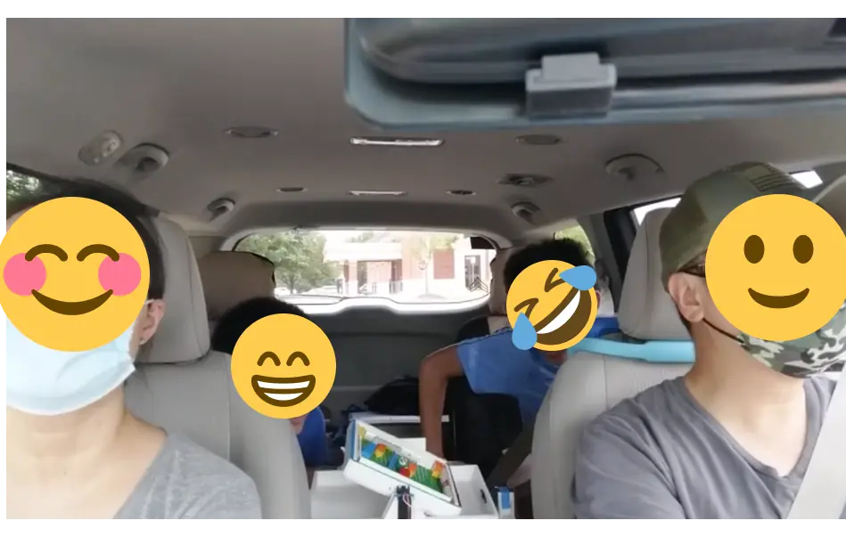
Marty combines haptic and kinetic input, the movement of the car, and cooperative play into a game where seats are the controllers. Players had to move the board so the marble hit the colored side of the board indicated by the screen + voice agent.
In the end, we provided Honda with a proven process and framework to rapidly design for connection and build empathy with customers. When we took a holistic and system based view of our three prototype experiences, a concept was developed, named SWERVO.
SWERVO reimagines the car as a system, similar to a game console, that uses personal, contextual and telematic data to create dynamic gameplay unique to the driving experience, all based on elements from our framework. The system brought value to Honda in three primary ways:
We presented our concept to an Associate Director of Mobility Innovation, Mobile Research Engineer and a number of senior engineers at Honda. Overall, they were thrilled with the viability of the concept, despite it being forward thinking and innovative.
Specifically, they were impressed with the quality of research, the simple way we validated a complex concept and how we created an implementation plan that takes advantage of existing technology and sensors.
I'm currently available and looking for a new, full-time role. If you have a design opportunity and would like to learn more about me and my experience, reach out!
Connect